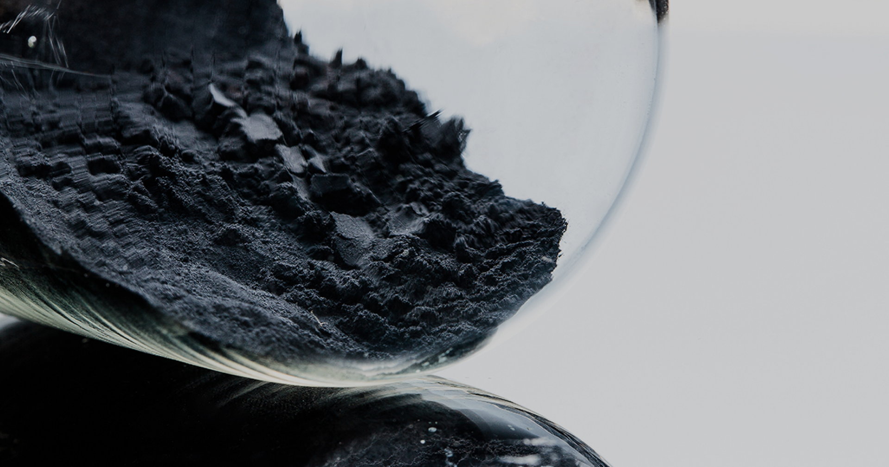

생산공정
오랜 연구와 기술력이 결집된
한국전구체의 생산공정을 소개해드립니다

배합공정
니켈(Ni), 코발트(Co), 망간(Mn)을 용해하여 각각의 금속 용액으로 만든 후 오랜 연구를 통해 정립된 기준에 따라 배합하여 NCM수용액을 제조합니다.
반응공정
NCM 수용액과 시약(NH4OH, NaOH)을 반응기에 투입하여 공침 반응을 통해 전구체 합성을 유도합니다.

여과공정
합성된 전구체와 반응여액(餘厄)을 분리하고 불순물을 제거하여 전구체를 추출합니다.
건조공정
여과한 전구체 내 수분을 일정수준 이상으로 건조한 뒤 각각의 반응기에서 추출된 전구체를 일정하게 혼합합니다.
분급·탈철 공정
엄격한 입자크기 규격에 부합하는 전구체를 선별한 다음 전자식탈철기를 거쳐 공정중에 유입될 수 있는 자성 이물질까지 제거해주면한국전구체 주식회사만의 기술력이 담긴 순도높은 전구체가 완성됩니다.
소성공정
수명이 다한 배터리를 수집·분쇄하여 제조한 BP(블랙파우더), BS(블랙매스)를 소성(燒成)로에 투입하여 소성공정을 통해 가공합니다.
용해·여과 공정
소성된 원료에 함유되어 있는 니켈(Ni), 코발트(Co), 망간(Mn), 리튬(Li)을 용해하여 금속용액 형태로 제조한 후 여과하여 용해액과 미용해액을 분리합니다.
정제공정
시약(NaOH)을 이용하여 용해액에 함유된 니켈, 코발트, 망간을 침전시켜 NCM침전물은 분리 후 NCM 수용액 상태로 용해하고, 남은 리튬 수용액에 잔류한 불순물을 제거하기위해 정제합니다.
고액분리공정
2차 정제공정에서 침전한 불순물을 고액분리공정을 통해 여과하여 제거합니다.
NCM수용액 및
수산화리튬 공급
수산화리튬 공급
생산한 NCM수용액은 원료탱크로 이동하여 전구체 생산의 원료로 활용하고, NCM이 제거된 수용액은 증발농축 및 정제공정을 거쳐 수산화리튬을 생산합니다.